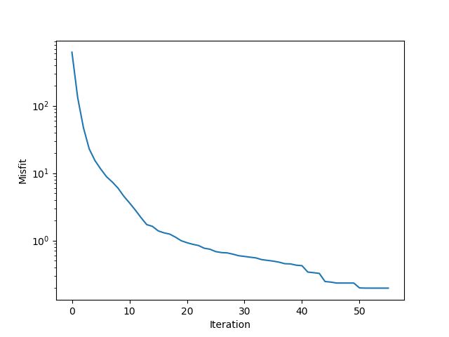

Flow Inversion
This section is an example of solving the flow equation with the Newton-Raphson method. The governing equations are derived from conservation of mass of each phase, and conservation of momentum or Darcy's law for each phase. First, we have
\[\frac{\partial }{{\partial t}}(\phi {S_i}{\rho _i}) + \nabla \cdot ({\rho _i}{\mathbf{v}_i}) = {\rho _i}{q_i}, \quad i = 1,2\]
The saturation of the two phases satisfies
\[S_{1} + S_{2} = 1\]
and the Darcy's law yields
\[{\mathbf{v}_i} = - \frac{{K{k_{ri}}}}{{{\tilde{\mu}_i}}}(\nabla {P_i} - g{\rho _i}\nabla Z), \quad i=1,2\]
Here $k_{ri}$ is a function of $S_i$ given by Krw and Kro.
const K_CONST = 9.869232667160130e-16 * 86400 * 1e3
const ALPHA = 1.0
mutable struct Ctx
m; n; h; NT; Δt; Z; X; ρw; ρo;
μw; μo; K; g; ϕ; qw; qo; sw0
end
function tfCtxGen(m,n,h,NT,Δt,Z,X,ρw,ρo,μw,μo,K,g,ϕ,qw,qo,sw0,ifTrue)
tf_h = constant(h)
# tf_NT = constant(NT)
tf_Δt = constant(Δt)
tf_Z = constant(Z)
tf_X= constant(X)
tf_ρw = constant(ρw)
tf_ρo = constant(ρo)
tf_μw = constant(μw)
tf_μo = constant(μo)
# tf_K = isa(K,Array) ? Variable(K) : K
if ifTrue
tf_K = constant(K)
else
tf_K = Variable(K)
end
tf_g = constant(g)
# tf_ϕ = Variable(ϕ)
tf_ϕ = constant(ϕ)
tf_qw = constant(qw)
tf_qo = constant(qo)
tf_sw0 = constant(sw0)
return Ctx(m,n,tf_h,NT,tf_Δt,tf_Z,tf_X,tf_ρw,tf_ρo,tf_μw,tf_μo,tf_K,tf_g,tf_ϕ,tf_qw,tf_qo,tf_sw0)
end
function Krw(Sw)
return Sw ^ 1.5
end
function Kro(So)
return So ^1.5
end
function ave_normal(quantity, m, n)
aa = sum(quantity)
return aa/(m*n)
endThe major simulation codes consist of using a nonlinear implicit timestep. In sat_op we solve a nonlinear equation with Newton-Raphson scheme.
# variables : sw, u, v, p
# (time dependent) parameters: qw, qo, ϕ
function onestep(sw, p, m, n, h, Δt, Z, ρw, ρo, μw, μo, K, g, ϕ, qw, qo)
# step 1: update p
# λw = Krw(sw)/μw
# λo = Kro(1-sw)/μo
λw = sw.*sw/μw
λo = (1-sw).*(1-sw)/μo
λ = λw + λo
q = qw + qo + λw/(λo+1e-16).*qo
# q = qw + qo
potential_c = (ρw - ρo)*g .* Z
# Step 1: implicit potential
Θ = upwlap_op(K * K_CONST, λo, potential_c, h, constant(0.0))
load_normal = (Θ+q/ALPHA) - ave_normal(Θ+q/ALPHA, m, n)
# p = poisson_op(λ.*K* K_CONST, load_normal, h, constant(0.0), constant(1))
p = upwps_op(K * K_CONST, λ, load_normal, p, h, constant(0.0), constant(0)) # potential p = pw - ρw*g*h
# step 2: implicit transport
sw = sat_op(sw, p, K * K_CONST, ϕ, qw, qo, μw, μo, sw, Δt, h)
return sw, p
end
function imseq(tf_ctx)
ta_sw, ta_p = TensorArray(NT+1), TensorArray(NT+1)
ta_sw = write(ta_sw, 1, tf_ctx.sw0)
ta_p = write(ta_p, 1, constant(zeros(tf_ctx.m, tf_ctx.n)))
i = constant(1, dtype=Int32)
function condition(i, tas...)
i <= tf_ctx.NT
end
function body(i, tas...)
ta_sw, ta_p = tas
sw, p = onestep(read(ta_sw, i), read(ta_p, i), tf_ctx.m, tf_ctx.n, tf_ctx.h, tf_ctx.Δt, tf_ctx.Z, tf_ctx.ρw, tf_ctx.ρo, tf_ctx.μw, tf_ctx.μo, tf_ctx.K, tf_ctx.g, tf_ctx.ϕ, tf_ctx.qw[i], tf_ctx.qo[i])
ta_sw = write(ta_sw, i+1, sw)
ta_p = write(ta_p, i+1, p)
i+1, ta_sw, ta_p
end
_, ta_sw, ta_p = while_loop(condition, body, [i, ta_sw, ta_p])
out_sw, out_p = stack(ta_sw), stack(ta_p)
endWe now first generate the synthetic data.
using FwiFlow
using PyCall
using LinearAlgebra
using DelimitedFiles
np = pyimport("numpy")
const SRC_CONST = 86400.0 #
const GRAV_CONST = 9.8 # gravity constant
# Hyperparameter for flow simulation
m = 15
n = 30
h = 30.0 # meter
NT = 50
dt_survey = 5
Δt = 20.0 # day
z = (1:m)*h|>collect
x = (1:n)*h|>collect
X, Z = np.meshgrid(x, z)
ρw = 501.9
ρo = 1053.0
μw = 0.1
μo = 1.0
K_init = 20.0 .* ones(m,n) # initial guess of permeability
g = GRAV_CONST
ϕ = 0.25 .* ones(m,n)
qw = zeros(NT, m, n)
qw[:,9,3] .= 0.005 * (1/h^2)/10.0 * SRC_CONST
qo = zeros(NT, m, n)
qo[:,9,28] .= -0.005 * (1/h^2)/10.0 * SRC_CONST
sw0 = zeros(m, n)
survey_indices = collect(1:dt_survey:NT+1) # 10 stages
n_survey = length(survey_indices)
K = 20.0 .* ones(m,n) # millidarcy
K[8:10,:] .= 120.0
tfCtxTrue = tfCtxGen(m,n,h,NT,Δt,Z,X,ρw,ρo,μw,μo,K,g,ϕ,qw,qo, sw0, true)
out_sw_true, out_p_true = imseq(tfCtxTrue)
We now conduct inversion. The unknown variable is stored in tfCtxInit.K.
tfCtxInit = tfCtxGen(m,n,h,NT,Δt,Z,X,ρw,ρo,μw,μo,K_init,g,ϕ,qw,qo, sw0, false)
out_sw_init, out_p_init = imseq(tfCtxInit)
sess = Session(); init(sess)
O = run(sess, out_sw_init)
vis(O)
# NOTE Compute FWI loss
loss = sum((out_sw_true-out_sw_init)^2)
opt = ScipyOptimizerInterface(loss, options=Dict("maxiter"=> 100, "ftol"=>1e-12, "gtol"=>1e-12),var_to_bounds = Dict(tfCtxInit.K=>(10.0, 130.0)))
__cnt = 0
__loss = 0
out = []
function print_loss(l)
if mod(__cnt,1)==0
println("iter $__cnt, current loss=",l)
end
global __loss = l
global __cnt += 1
end
__iter = 0
function step_callback(rk)
if mod(__iter,1)==0
println("================ ITER $__iter ===============")
end
println("$__loss")
push!(out, __loss)
global __iter += 1
end
sess = Session(); init(sess)
ScipyOptimizerMinimize(sess, opt, loss_callback=print_loss,
step_callback=step_callback, fetches=[loss])
We can visualize K with
imshow(run(sess, tfCtxInit.K), extent=[0,n*h,m*h,0]);
xlabel("Distance (m)")
ylabel("Depth (m)")
cb = colorbar()
clim([20, 120])
cb.set_label("Permeability (md)")